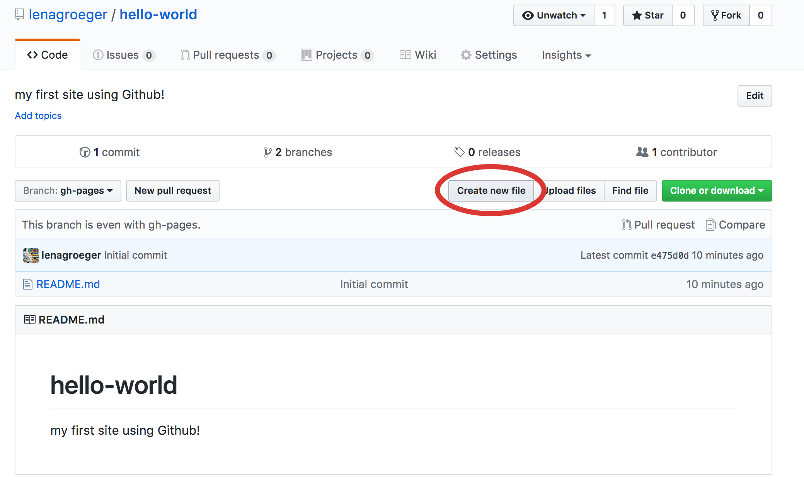

An Online Portfolio – From Scratch!
Lena Groeger, ProPublica
Part 1: Let's Make a Website
1. Go to Github and sign up for a new account if you don't already have one. Don't worry, Github isn't scary! We'll walk through it together.
2. Now that you have a brand new Github account, complete steps 1 & 2 of this Github tutorial. You should end up with a new repo, called hello-world.
3. Now that you've learned how to make a new branch, make another branch called gh-pages. Make sure you include that dash!
4. Now let's make a new file. Click on "New File". You'll be taken to a new page
5. You'll have the option to "Name your file..." Let's name it index.html

6. We're also going to put in the following text into this new file: <h1>My New Website</h1>

7. Now scroll down to the bottom and click "Commit new file"

8. Now navigate to the following url: [github-username].github.io/[your-repo-name]. Your repo will likely be "hello-world". Since I called mine "sample," my url is: lenagroeger.github.io/sample
Congrats! Now you have your own website, hosted on the internet for free!
But this is just the beginning. Now we have to write all the HTML and CSS to make your pages more than just a blank white page with "My New Website." That's what we'll do next.
Part 2: Build your Online Portfolio
1. First, figure out what you want to include (first off, your name should probably go on there). But what about links to clips and projects? Photos? A bio? A contact section? All of this is up to you.
2. Your online portfolio can be whatever you'd like. But for the purposes of today (and of providing you with a bare minimum by the end of class), we're going to start with this template: template.html
3. In Github, click on the Edit button (it looks like a pencil) in the top right corner of your index.html page.
4. Open up template.html in a Text Editor, Select All and Copy. Paste the contents of the template.html file into your index.html page, replacing <h1>My New Website</h1> It should look like this:
5. Commit that change by clicking the green "Commit Changes" button, and refresh your website (the URL that looks something like lenagroeger.github.io/sample)
6. You should see the new portfolio template hosted at your own website:

7. That wasn't so bad, right? Now, it's time to customize! Click on the pencil button to edit, your index.html file again, and this time scroll down to the part that says "My Online Portfolio" and change it to your own name.
8. Feel free to go ahead and change more text. Add a section header instead of "2 Column Section", and add in your own contact information.
9. The last thing we'll do is change that grey box into a photo. We'll test it out using this photo:
Download the photo »{kind=link}
10. Navigate back to your repo page by clicking on the "Code" tab in the top left of the page.
11. Then click on "Upload files"
12. And drag in the water.jpg file.

13. Commit those changes, and you've just added your first image to the repo!
14. Now back in the index.html file, find a place that says: img src="". Inside those quotation marks, add water.jpg. Your code should now look like: <img src="water.jpg">
15. Refresh the page, and your image should be there!
16. See if you can change the title above that image to the title of the piece, like so:
17. Finally, we'll add a link to the real article I stole this image from: http://scienceline.org/2015/04/from-pollution-to-power/
18. A link in HTML looks like this: <a href="URL"> STUFF YOU WANT LINKED <a>
So in our case, we'll link the title. It should look like: <a href="http://scienceline.org/2015/04/from-pollution-to-power/"> From Pollution to Power<a>
Here's how that looks in our index.html file.
BONUS: Can you link the image as well?
19. Keep editing text and adding images, and we'll talk a bit more about how HTML and CSS work.
Part 3: Resources
Of course, many of you will want to do more that just the basic template. There are a ton of templates out on the internet (some better than others). Here are two I like:
And here are a number of online portfolios that may be useful for a bit of inspiraton:
- http://strangelove.me/
- http://www.jessewillmon.com/new_portfolio/illustration/
- http://www.trademark-trademark.com/
- http://www.jonbrousseau.com/
- http://coopgrafik.com/portfolio/
- http://www.mypoorbrain.com/
Finally, you may eventually want to go beyond editing a single file using GitHub in the browser. Take a look at GitHub for Desktop, or, if you're feeling adventurous, try out the Command Line.
I hope that was helpful. If you want to dive more into this stuff, here's a big list of resources I've created. And feel free to get in touch: @lenagroeger or lena.groeger@propublica.org. Best of luck in your coding adventures!